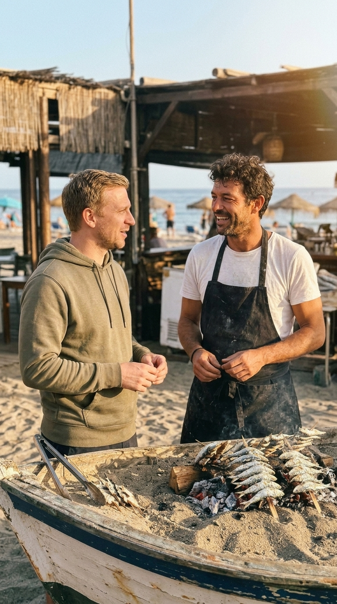

Za krevetami po andaluském pobřeží
Por la costa andaluza, a comer gambas
Huelva, Sanlúcar a Garrucha: tři místa, tři krevety. A slavnost krevet v Punta Umbría má teď šanci na oficiální titul turistické zajímavosti Andalusie.

Andalucía tiene mucha y mucho . Honza quiere tres famosas. Rafa, que es cocinero en un , le da el plan.
Andalusie má dlouhé pobřeží a spoustu mořských plodů. Honza chce ochutnat tři slavné krevety. Rafa, který vaří v plážovém baru, mu dá plán.
Huelva: la gamba blanca, la "perla de Huelva". Es , de piel fina y de color rosa claro. Se pesca en el de arena de la costa. Se come o a la .
Huelva: bílá kreveta, „perla Huelvy“. Je plochá, s jemnou slupkou a světle růžová. Loví se na písečném dně u pobřeží. Jí se vařená nebo z plotny.
Sanlúcar de Barrameda (Cádiz): aquí está el de Sanlúcar. Se come en los bares del de Bajo de Guía. Sanlúcar es también la ciudad de la manzanilla, un vino blanco seco.
Sanlúcar de Barrameda (provincie Cádiz): tady je doma garnát ze Sanlúcaru. Jí se v barech na promenádě Bajo de Guía. Sanlúcar je také městem manzanilly, suchého bílého vína.
Garrucha (Almería): la gamba roja. Aquí la llaman "alistado". Es muy delicada y .
Garrucha (provincie Almería): červená kreveta. Tady jí říkají „alistado“. Je velmi jemná a nasládlá.
Y una buena noticia: el 13 de noviembre, el Consejo Andaluz del Turismo propuso diez fiestas como Fiesta de Interés Turístico de Andalucía. Una es la Feria Nacional de la Gamba, la Chirla y el Boquerón de Punta Umbría (Huelva). Ahora falta el sí del Gobierno andaluz.
A dobrá zpráva: 13. listopadu navrhla Andaluská rada pro cestovní ruch deset slavností na titul turistické zajímavosti Andalusie. Jednou z nich je Národní slavnost krevet, škeblí a sardelí v Punta Umbría (Huelva). Teď ještě chybí souhlas andaluské vlády.
En esa feria hay gambas, , , y , pero también jamón, vino y dulces. Y por la noche, música y orquestas.
Na té slavnosti jsou krevety, malé škeble, sardele, chobotnice a slávky, ale taky šunka, víno a sladkosti. A večer hudba a kapely.
Tvoje slovíčka z článku
Mezitím u Lucíe
HonzaRafa, ¿qué gamba es la mejor?
Rafa¡Todas! Pero la blanca de Huelva, a la plancha... uf.
HonzaVale. ¿Me pones media ración?
RafaClaro. ¿Y para beber? ¿Una manzanilla?
Honza: „Rafo, která kreveta je nejlepší?“ Rafa: „Všechny! Ale bílá z Huelvy z plotny… uf.“ Honza: „Dobře. Dáš mi půl porce?“ Rafa: „Jasně. A k pití? Manzanillu?“
Slovíčka k článku
- la gambakreveta
- el langostinogarnát (velká kreveta)
- el mariscomořské plody
- a la planchaz plotny, grilované
- cocido / cocidavařený / vařená
- media raciónpůl porce
- ¿Me pones…?Dáš mi…? (objednávka v baru)
Chceš takhle španělštinu každý den? Začínáš od nuly? 5 krátkých lekcí z Málagy e-mailem. Už něco umíš? 5 dní členství od své úrovně. Obojí zdarma.
Začni zdarma